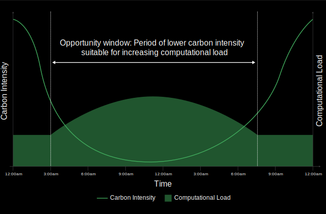
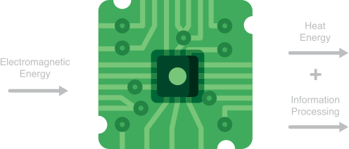

Sustainability in the Computing Age: Addressing the Environmental Impact of Digital Technology
Last week, I streamed 20 hours of videos on Netflix, YouTube, and Canvas. I asked 50 questions to ChatGPT and made 532 Google searches. I sent 25 emails and 325 WhatsApp messages. From behind my screens, it did not feel like I was contributing to greenhouse gas emissions. Yet, the environmental impact of my online activity was real—it amounted to grams of CO₂ equivalents, distributed as follows:
Over a year, this would add up to approximately kilograms of CO₂ equivalents. To put that number in perspective, that is like:
What About You?
If you are curious about your own digital footprint, use the sliders below to model your usage. The default values represent the average behavior of an internet user in the United States.
Over a year, this would add up to approximately XYZ kilograms of CO₂ equivalents. To put that number in perspective, that is like:
At first glance, these numbers might seem small—and in absolute terms, they are. Taken individually, they may not ring any alarm bells, in particular as digital services have become an essential part of modern life. So, why does this matter?
The key takeaway is that digital activities have a carbon footprint, however small. When scaled across billions of people, even tiny amounts can add up to something enormous. This is especially true for digital technology, given the rapid and relentless growth of the internet.
The Internet Is Growing Fast
Between 2000 and 2024, the number of internet users has grown from 414 million to 5.52 billion:
This growth has been remarkably steady, with a mostly linear increase from 2000 to 2020. However, it now appears to be slowing. This is likely because a significant portion of the global population is already online. As we approach full global internet penetration, it is reasonable to expect the rate of growth to continue slowing. But what about internet traffic? How has the volume of data generated, transferred, and consumed by all these users changed over time?
The chart below allows you to simulate the growth of internet traffic since 2000. Three options are available: logarithmic, linear, and exponential. Select an option and submit your guess to see how close you are to the actual growth rate.
Energy Consumption and Greenhouse Gas Emissions Are On The Rise
With the rapid growth of internet traffic in mind, you might wonder how this has impacted the web's electricity consumption. The chart below compares the internet’s energy use over time to that of G20 member countries, illustrating how the internet would rank if it were a country.
You can let the chart autoplay with the Play button, freeze the animation with the Pause button, and navigate through time year by year with the Previous and Next buttons. You can also update the list of countries included in the chart to refine your analysis.
Between 2010 and 2022, the internet’s electricity consumption increased nearly tenfold, rising from 83 TWh to 788 TWh—a staggering 20.63% compound annual growth rate. By 2022, the internet consumed more electricity than 14 G20 countries, including Brazil and Germany, and was only outpaced by China, the United States, India, Russia, and Japan.
Looking ahead, the trend shows no sign of slowing. Thunder Said Energy projects that by 2030, the internet’s electricity consumption will reach 2,000 TWh, and by 2050, it could climb to 3,750 TWh. If these forecasts hold true, the internet alone would account for 5% to 7% of global electricity use—a remarkable share for something so integral to modern life. What does this mean in terms of CO₂ emissions?
While the Information and Communication Technology (ICT) sector is often highly praised for enabling efficiencies that help reduce other sectors' footprint, it receives little attention as a contributor itself to greenhouse gas emissions. The charts below show the evolution of the ICT sector's CO₂ emissions:
According to Belkhir and Elmeligi, between 2007 and 2020, the ICT sector’s share of global emissions more than doubled, rising from an estimated 1.06%-1.6% in 2007 to 3.06%-3.6% in 2020. This reflects the world’s increasing reliance on digital technology and infrastructure.
By 2040, Belkhir and Elmeligi estimate that the ICT sector’s share of the global carbon footprint could range from 5.82% under a linear trend to 14.57% if growth follows an exponential trajectory. Under that exponential scenario, ICT emissions would surpass the relative footprint of agriculture (9%) and approach half the current footprint of the industrial sector (29%) in the United States. These estimates assume global emissions stabilize at 2015 levels, in line with the Paris Agreement.
If the exponential trend prevails, the ICT sector will become one of the largest contributors to global emissions. This is the curve we want to bend.
Where Are Emissions Coming From?
To bend the curve of emissions from the ICT sector, we first need to understand what is causing these emissions. Estimates of emissions in the ICT sector vary according to methodology, but experts converge towards the idea that the main sources of emissions are data centers, networks, and user devices.
These three pillars of modern digital ecosystems interact to deliver digital services, enabling data transmission and processing:
- Data centers process, store, and manage vast amounts of data, consuming energy for computation, storage, and cooling, often producing significant emissions if powered by non-renewable energy.
- Networks, comprising wired and wireless infrastructure like fiber optics, routers, and cellular towers, transmit data between devices and data centers. They consume energy for signal transmission and maintaining connectivity, with emissions varying by network efficiency and energy grid.
- User devices (e.g., smartphones, laptops) serve as endpoints for accessing and consuming content, running applications, and interacting with services. They consume energy primarily for processing, storage, and display, with emissions depending on their energy source.
Andrae and Edler estimate ICT emissions to be distributed as follows:
Within each segment, we need to distinguish between two categories of emissions:
- Embodied emissions refer to the greenhouse gases produced during the manufacturing, transportation, and installation of digital hardware, such as servers, devices, and network equipment.
- Operational emissions are generated during the daily use of digital systems, including powering data centers, networks, and user devices.
According to the Sustainable Web Design Model, embodied and operational emissions are distributed as follows:
As the charts above suggest, addressing embodied emissions is crucial, since these emissions are essentially "built into" the physical infrastructure before it is used. However, as this pertains to the field of hardware manufacturing, it is outside the direct scope of this article.
In sustainable computing and software engineering, the focus is often on reducing operational emissions because they are directly influenced by how we design, develop, and optimize software and systems—such as improving energy efficiency, minimizing data transfer, and utilizing green energy sources. Let's examine how we can decrease operational emission contributions of data centers, networks, and user devices.
The Promise of Renewable Energy
One of the main sources of operational emissions in the ICT sector is the energy consumption of data centers. One way to reduce the emissions of data centers is to power them with renewable energy sources. Fortunately, the trend is already moving in this direction. The largest cloud providers, such as Amazon Web Services, Google Cloud, and Microsoft Azure, have committed to powering their data centers with 100% renewable energy between 2025 and 2030:
- In 2020, AWS reached 65% of renewable energy usage, and as of 2023, the company was matching 100% of its electricity consumption with renewable energy sources. Amazon is aiming to operate their data centers with 100% renewable energy by 2025, with a target for net-zero status by 2040.
- Google's data centers have been carbon neutral since 2007 and the company has been matching 100% of its annual electricity consumption with renewable energy purchases since 2017. Between 2019 and 2020, the share of renewable energy in Google's global electricity consumption increased from 61% to 67%.
- Microsoft's data centers have been carbon neutral since 2012, and were relying on 50% renewable energy by 2018. By 2050, the company ambitions to remove from the atmosphere all the carbon it has emitted since its founding in 1975.
Until all data centers are completely powered by renewable energy, sustainable software engineering practices can help product development teams maximize the reliance of the cloud applications they build on renewable energy sources. To that effect, the Linux Foundation's Green Software for Practitioners certification advocates two fundamental carbon-awareness approaches, to make software do more when the carbon intensity of computing is lower.
Computational Load Optimization Based on Carbon Intensity
Demand shifting, on the one hand, involves rescheduling or relocating computational tasks to take advantage of lower carbon intensity at different times or locations. This strategy can be broken down into two types: spatial shifting and temporal shifting. Spatial shifting means moving computations to regions where energy is cleaner, such as data centers powered by renewable energy. Temporal shifting involves delaying tasks to times when the grid is less carbon-intensive, such as during sunny or windy periods. Training machine learning models at night when wind energy is abundant or relocating workloads to another hemisphere during peak solar seasons are both examples of demand shifting. Anne Currie, co-author of Building Green Software, and a leading voice in sustainable computing, told me:
LLM training is a great example of what the Texan grid refers to as a Large Flexible Load, i.e. a load that is latency insensitive and could therefore be aligned with solar or wind generation. Even inference could be done in this way using pre-calculation and caching.
Demand shaping, on the other hand, refers to adapting computational workloads to align with the availability of low-carbon energy sources. Instead of moving tasks to a different time or location, demand shaping involves increasing or decreasing application activities in response to the current carbon intensity of the electricity grid. For instance, when the grid is powered predominantly by renewable energy, applications can scale up and perform more energy-intensive tasks. Conversely, during periods of higher carbon intensity, applications can reduce demand or prioritize essential processes. Examples of demand shaping include video conferencing software that adjusts streaming quality based on bandwidth or energy efficiency, and eco modes in applications that sacrifice performance to reduce energy consumption automatically or with user consent.
Efficiency, The Cornerstone of Sustainability
Dr. Sadasivan Shankar is Research Technology Manager at SLAC National Laboratory, Adjunct Professor in Stanford Materials Science and Engineering, and Lecturer in the Stanford Graduate School of Business. His current research and analysis on sustainable computing is helping provide directions for the US Department of Energy’s EES2 scaling initiative, which aims to enhance the energy efficiency of semiconductor applications by a factor of 1,000 over the next 20 years. Dr. Shankar argues:
Even if the entire ICT sector were powered by renewable energy, the industry’s exponential growth means efficiency would still be critical.
Without significant improvements in how energy is used, the sector risks consuming an outsized share of clean energy resources that are also essential for other sectors and societal needs.
One key metric used to measure data center energy efficiency is Power Usage Effectiveness (PUE). Developed by The Green Grid in 2006, PUE compares the total energy consumption of a data center to the energy used solely by its computing equipment. A PUE of 1.0 indicates that all energy is used for computing, with no additional overhead for cooling or power distribution. In contrast, if an application consumes 10 kWh of energy and the data center’s PUE is 1.5, the actual energy drawn from the grid is 15 kWh—10 kWh for computing and 5 kWh for operational overhead like cooling and power delivery.
Fortunately, PUE has improved significantly over the years. In 2007, the global average PUE was around 2.5, meaning that data centers consumed 1.5 watts in overhead for every watt used by computing equipment. By 2020, global PUE had dropped to under 1.6, thanks to advancements in IT hardware, more efficient cooling technologies, and a shift towards hyperscale cloud data centers that are far more efficient than smaller enterprise facilities.
This progress has been instrumental in keeping global data center electricity consumption relatively flat despite the exponential growth of internet traffic and workloads. For example, while internet traffic grew by a factor of 20 between 2010 and 2020, data center electricity use only increased moderately, stabilizing at an estimated 240-340 TWh in 2022, or roughly 1-1.3% of global electricity demand.
To understand the impact of PUE on energy consumption more deeply, explore the interactive charts below. The first chart illustrates the worldwide average annual PUE of data centers from 2010 to 2050, while the second shows global data center electricity consumption over the same period, including the energy used by blockchains and AI. By adjusting the PUE values in the first chart, you can see how efficiency improvements could shape energy consumption in the second chart.
These visualizations highlight both the achievements made so far and the critical importance of further reducing PUE over the long term to limit energy consumption as the ICT sector continues to grow. To achieve this, let's consider the factors that influence PUE, including how data centers manage energy-intensive processes like cooling.
Taking The Heat—And Giving It Back
A data center functions as a vast collection of information processing engines—servers—designed to perform complex computational tasks. Fundamentally, computing is the act of flipping bits—a physical process that requires and converts energy. Each server takes in electromagnetic energy as electricity, which powers its operations. This energy is then transformed into two outputs: information processing, the intended result, and heat energy, an inevitable byproduct.
Energy Conversion Flow of an Information Processing Engine
Innovation in overhead efficiency, particularly in cooling systems, plays a critical role in improving PUE by ensuring a larger proportion of a data center's energy consumption is allocated to computing rather than managing heat. Cutting-edge solutions such as advanced liquid cooling, optimized airflow designs, and energy-efficient pumps have already demonstrated their potential to reduce cooling demands significantly. As organizations aim to lower their PUE, such innovations represent a vital path forward for sustainable operations.
But what about the heat that data centers inescapably produce? Waste heat, rather than being discarded, can become a valuable resource. For instance, data centers can repurpose excess heat to warm nearby residential or commercial buildings or support industrial processes, reducing reliance on other energy sources. If implemented effectively, waste heat management could even contribute to a dramatic reduction in Power Usage Effectiveness (PUE).
In theory, a data center that makes full use of its waste heat could achieve a PUE closer to—if not below—the theoretical threshold of 1.0, as the energy consumed would serve dual purposes: powering computing operations and providing useful heat for external needs. Although such an idea would require additional innovation, notably to reduce the noise of server cooling systems through adequate materials and technology, this underscores the transformative potential of waste heat as a key element in building more sustainable digital infrastructure.
Looking beyond hardware, optimizing the software that powers data centers offers another critical avenue for improvement. Rust, for example, is a programming language known for its efficiency, with studies showing it can halve electricity consumption compared to Java, a common language in cloud computing. Shane Miller, a leader in the Rust community, notes that this level of efficiency could enable data centers to double their current workloads or perform the same tasks in facilities half the size.
This creates a dual opportunity: by locating these mini data centers in urban areas—such as in the basements of residential or commercial buildings—they may be positioned closer to both heat consumers and data consumers. This proximity allows for more practical reuse of waste heat, while also reducing the network footprint—by minimizing the resources required to transmit heat and data, respectively, over long distances. These combined benefits hint at the transformative potential of sustainable software practices in addressing energy challenges.
The Immense Potential of Sustainable Software Engineering
In February 2020, Danny van Kooten, a software developer, published a blog post highlighting how a small change in sustainable web design could deliver remarkable environmental benefits. While refactoring his popular Mailchimp for WordPress plugin, he reduced the amount of data sent to the browser on every visit by just 20 KB.
Given that over two million websites use the plugin, this seemingly minor update led to an estimated reduction of the world’s monthly CO₂ output by 59,000 kilograms—roughly the equivalent of 85 transatlantic flights from New York to Amsterdam and back. This story underscores how thoughtful, data-driven design choices can have an outsized positive impact, serving as a model for building greener digital systems. In the words of Mr. van Kooten:
"There's no way I can have that kind of effect in other areas of my life."
Mr. van Kooten’s story also reflects the broader principles of sustainable web design, which focus on minimizing the energy and resources required to build, run, and access digital services. Experts like Tom Greenwood, Tim Frick, and Anne Currie have outlined key practices for sustainable digital systems that help reduce emissions across data centers, networks, and user devices:
- Prioritize simplicity and efficiency: Reducing unnecessary features, files, and code minimizes energy consumption across all three areas by decreasing processing demands, lowering network data transfer, and reducing energy usage on devices.
- Design for performance: Optimizing load times and minimizing data transfer directly reduces emissions from networks and user devices, as smaller data loads require less energy for transmission and processing.
- Leverage green hosting: Choosing hosting providers powered by renewable energy targets data center emissions, significantly reducing their carbon footprint.
- Adopt user-centric sustainability: Building interfaces and features that encourage environmentally conscious behavior can reduce emissions from user devices, such as by promoting power-saving modes or reducing the need for frequent updates.
- Extend system lifespans: Designing software and digital tools to remain functional longer helps reduce embodied emissions from manufacturing user devices and hardware while curbing waste.
- Measure and optimize continuously: Tools to measure the environmental impact of digital services enable improvements across data centers, networks, and user devices, ensuring a holistic approach to sustainability.
While building the website for this article, I aimed to follow sustainable web design best practices wherever possible. For example, I chose a black background and green accents, as these colors consume less energy on user devices by minimizing screen pixel illumination. I also opted for lightweight visuals in SVG format, which require less data transmission than larger file types, and limited the imported libraries to essentials like D3 for charts. However, this is a work in progress—I could further optimize by compacting the CSS stylesheet and switching to a hosting provider powered by renewable energy, as GitHub Pages currently does not offer this option.
These principles highlight how sustainable web design can reduce emissions at every stage of digital infrastructure. Whether through optimizing software or selecting renewable-powered data centers, these strategies empower developers to make a meaningful impact on the environment. But how can we start assessing emissions from software, and how do we measure progress toward long-term sustainability?
What Gets Measured, Gets Managed
Advances in measurement tools are essential for driving change, as Ms. Currie emphasizes the importance of incorporating performance testing into software development practices. She highlights the need to understand what aspects of an application are fast or slow and the reasons behind their performance. In particular, she urges developers to evaluate the value of API calls, noting that they are CPU-intensive and represent an investment in energy and, often, carbon. By questioning the necessity and efficiency of these operations, engineers can make more sustainable choices in their designs.
For those with technical expertise, the Impact Framework from the Green Software Foundation provides an open-source toolkit to measure and manage the environmental impact of software. Designed for software engineering teams, this framework offers detailed methodologies and tools to analyze carbon emissions and optimize resource usage.
Meanwhile, Dr. Shankar’s lab at Stanford University is developing a tool to facilitate the measurement of software sustainability. This pioneer initiative reflects growing academic interest in empowering developers with actionable insights to reduce digital emissions.
For individuals and organizations, tools like Website Carbon and EcoGrader offer a practical way to assess the sustainability of any website. By analyzing factors like data transfer size, hosting energy source, and user traffic, these tools provide actionable insights to help you reduce your digital carbon footprint. For example, you can assess the carbon rating of this very website here.
The potential impact of sustainable software engineering becomes staggering when scaled across major organizations. Take the websites of Fortune 500 companies as an example. By calculating the grams of CO₂ emitted per visit using data from Website Carbon and scaling this based on each site's traffic from SimilarWeb, we can estimate that 492 of these companies collectively emit 105,877 tonnes of CO₂ annually. This is equivalent to the emissions of over 23,000 passenger cars driven for an entire year.
The interactive chart below allows you to explore the annual CO₂ emissions from these companies' websites. The size of each rectangle represents the emissions of the company's website. You can mouse hover over each rectangle to reveal additional details about the associated company. You can also refine the selection of companies included in the chart with the filters provided below the chart.
By now, we have explored numerous strategies to reduce emissions from data centers, networks, and user devices, primarily through engineering innovations. this raises an important question: what role can users play in mitigating the environmental impact of digital technology? Is changing how we use these services as effective as improving how they are designed and operated?
The Subtle Tradeoffs of Digital Sobriety
Digital sobriety—the idea that reducing our use of digital technology can help mitigate its environmental impact—offers an intuitive path to sustainability. On the surface, fewer video calls, emails, and streamed gaming sessions seem like they would lead to less data transmission, lower energy consumption, and reduced emissions. Beyond sustainability, cutting back on digital usage can have other personal benefits: studies show that limiting screen time can improve mental health, enhance sleep quality, and boost overall well-being
However, experts in sustainability take a more nuanced view. While digital sobriety may offer benefits in certain contexts, it also involves tradeoffs. As Dr. Shankar points out, computer usage is strongly correlated with societal indicators like GDP and the Human Development Index (HDI). Wider access to digital technologies has transformed education, healthcare, and economic opportunities, lifting millions out of poverty and improving overall well-being.
The series of six charts below highlights these correlations, illustrating how digitalization has become a cornerstone of progress. On each chart, each dot represents a country: you can hover with your mouse over each dot to reveal the associated country's name and data. You can also navigate from one chart to another with the "Previous Chart" and "Next Chart" buttons.
This perspective shifts the focus from individual digital habits to broader systemic solutions. Mr. Frick emphasizes that personal responsibility should certainly be encouraged. However, to effectively transition to a circular economy and meaningfully address emissions, he also argue that we need Extended Producer Responsibility (EPR), mandatory climate disclosures, and related laws to incentivize better behavior and hold corporations accountable. This resonates with what Asim Hussain, Executive Director of the Green Software Foundation, told me:
“An interesting perspective is to guide corporations into making carbon-neutral digital services, rather than expecting end users to reduce their usage. Ideally, video calls will produce fewer emissions, not because we are placing fewer of those, but because they simply do not emit greenhouse gases in the first place.”
These viewpoints emphasize the critical role of policy and corporate responsibility in tackling the environmental footprint of digital technology. Rather than scaling back digital usage, a more effective approach may be to embrace digitalization while focusing on making it cleaner and more efficient. Riding the wave of digital transformation—embracing the growing reliance on digital services—allows sustainability efforts to align with existing behavioral trends rather than resist them. This approach also preserves the broader, tangible benefits of digitalization, such as reducing emissions in other sectors
By supporting a sustainable transition, we can work toward a future where computing is not an expensive, carbon-emitting privilege for the few—but a clean, affordable, and accessible opportunity for all. However, could greater efficiency in digital technology unintentionally backfire, leading to even higher emissions as usage increases?
The Paradox of The Jevons Paradox
The Jevons Paradox originates from the 19th-century observation that increasing the efficiency of coal use led to a rise in total coal consumption. Applied to computing, the fear is that making digital services more sustainable and efficient will encourage greater usage, potentially negating the environmental benefits.
Mr. Hussain challenges that assumption. He emphasizes that the software most consumed is often the cheapest, most addictive, and most profitable—not necessarily the most efficient or environmentally friendly. To the best of his knowledge, there is no evidence to prove that making software more efficient will lead to higher emissions.
Dr. Shankar provides a compelling perspective on this issue: what matters is achieving a net positive trade-off. By analogy, he explains that if we extend human longevity, some people will use their additional years for good, and others for bad. Yet the net result—more years for meaningful contributions—is overwhelmingly positive, which is why we pursue it.
The same logic applies to sustainability in computing. Making digital technology more efficient might increase usage, but it will also amplify the positive outcomes—greater access to education, healthcare, and innovation. Dr. Shankar adds:
"Too much of a good thing is better than too little. The alternative—inefficient, high-emissions computing—would be far worse, and that is what we must avoid. Our goal is to make computing so efficient that, even if the entire world uses it tomorrow, it still consumes less energy than today."
Rather than fearing increased efficiency, the focus should be on designing digital systems that are both efficient and sustainable, enabling global access while minimizing energy use. As Dr. Shankar and Mr. Hussain both argue, efficiency in computing represents an opportunity to achieve a net positive impact—providing essential services to a growing population without exceeding planetary boundaries.
Let's Bend The Curve
Digital services have transformed the way we live, work, and connect—but they come with an environmental footprint that is far from negligible. While the emissions from individual activities like emails or streaming may seem small, they add up significantly when scaled across billions of users. As the internet and the ICT sector continue to grow at an unprecedented pace, we find ourselves on unsustainable trajectories that demand urgent attention.
Given how deeply digital services are woven into modern life, expecting an absolute decrease in usage is neither realistic nor desirable. Digitalization drives societal progress, offering opportunities for education, innovation, and economic growth while helping to reduce emissions in other industries through smarter logistics, virtual collaboration, and resource optimization. Rather than scaling back, the goal should be to ensure that digital growth is both inclusive and sustainable.
The key lies in fostering innovation to make digital services cleaner and more efficient. By improving energy use in data centers, networks, and user devices, and by adopting principles of sustainable software engineering, we can work toward a future where computing is accessible to everyone—at a fraction of today’s emissions. The challenge is immense, but so is the opportunity.
If we all join forces—as engineers, policymakers, and end users—to prioritize efficiency and sustainability in the technology industry, there is no doubt we can meet the world’s growing computing needs in an environmentally-friendly manner. Let's create a digital future that benefits everyone and the planet we call home. Let’s bend the curve.
Acknowledgments
I am deeply grateful to Professor Maneesh Agrawala, Cameron Linhares-Huang, and Mhar Tenorio for their outstanding teaching in the field of data visualization, which greatly enriched this project. My heartfelt thanks also go to Dr. Sadasivan Shankar, Tim Frick, Asim Hussain, Anne Currie, and Tom Greenwood for generously sharing their time and expertise in computing sustainability, offering invaluable insights that shaped this article. Finally, I would like to thank Noemie Clement for her unwavering support and encouragement throughout this initiative.